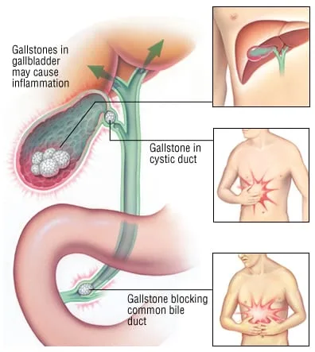
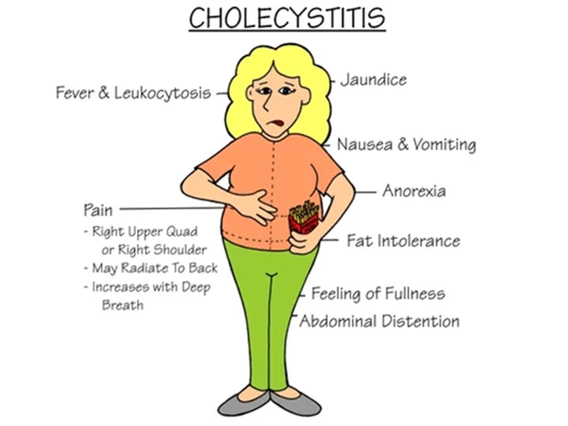
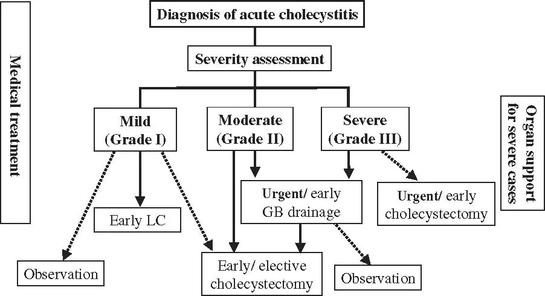

Expanded Nursing Uganda Explanation
Cholecystitis should be understood beyond a short definition. Link the concept to patient history, focused assessment, common risks, nursing priorities, documentation and evaluation of outcomes.
Contents, 17 sections (tap to expand)
01 CHOLECYSTITIS
Cholecystitis is an inflammation of the gallbladder and/or the biliary tract. Acute cholecystitis typically causes pain, tenderness, and rigidity in the upper right abdomen, which may radiate to the midsternal area or right shoulder.
- Calculous Cholecystitis (90% of cases): This is the most common type. The inflammation is caused by a gallstone obstructing the cystic duct, leading to bile stasis. The trapped bile acts as a chemical irritant, resulting in inflammation, edema, and potential compromise of the vascular supply, which can lead to gangrene.
- Acalculous Cholecystitis: This describes acute gallbladder inflammation that occurs in the absence of obstruction by gallstones. It typically occurs in critically ill patients after major surgery, severe trauma, or burns.
02 Causes
- Obstruction of the cystic duct by gallstones (most common cause).
- Major abdominal trauma or severe burns.
- Major surgery (especially abdominal surgery).
- Multiple blood transfusions.
- Primary bacterial infections of the gallbladder (e.g., from E. coli , Klebsiella ).
03 Clinical Features of Cholecystitis
- Pain and Biliary Colic: The hallmark symptom is excruciating pain in the upper right quadrant (RUQ) of the abdomen, which can be constant or colicky (cramping). The pain often radiates to the back or right shoulder. The pain may also be exacerbated by deep breathing or palpation of the RUQ.
- Abdominal Signs: Marked tenderness and rigidity in the RUQ. A palpable abdominal mass may be felt due to an inflamed and distended gallbladder. A positive Murphy's sign (inspiratory arrest upon deep RUQ palpation while the patient takes a deep breath) is a classic finding, indicating inflammation of the gallbladder.
- Gastrointestinal Symptoms: Nausea and vomiting are common, especially after a heavy or fatty meal, as the gallbladder is stimulated to contract to release bile, exacerbating the obstruction. Anorexia may also be present.
- Systemic Signs: Fever (38–39°C) with chills indicates an inflammatory response and potential infection. Tachycardia (increased heart rate) may also be present.
- Signs of Biliary Obstruction: These signs suggest that the obstruction extends beyond the cystic duct to the common bile duct. Jaundice: Yellow discoloration of the skin and sclera due to the buildup of bilirubin if a stone obstructs the common bile duct.
- Changes in Urine and Stool: Very dark urine (due to bilirubin excretion in urine) and clay-colored stools (due to lack of bilirubin in stool) are indicative of complete bile duct obstruction.
- Severe Pruritus (itching): Due to bile salt deposition in the skin.
- Vitamin Deficiency: Impaired bile flow can lead to poor absorption of fat-soluble vitamins (A, D, E, and K), which can manifest as night blindness (A), bone problems (D), neurological issues (E), and bleeding tendencies (K).
04 Classification of Acute Cholecystitis
The severity is classified into three grades to guide treatment and prognosis (Tokyo Guidelines 2018):
- Grade I (Mild): The inflammation is limited to the gallbladder with no associated organ dysfunction. This typically resolves with conservative management.
- Grade II (Moderate): Associated with more extensive disease in the gallbladder, but still no organ dysfunction. Criteria include: Elevated white blood cell count (WBC > 18,000/mm³)
- Palpable tender mass in the RUQ
- Duration of symptoms > 72 hours
- Evidence of local inflammation (e.g., pericholecystic fluid, localized peritonitis, phlegmonous cholecystitis on imaging)
- Grade III (Severe): An acute phase associated with organ dysfunction (e.g., cardiovascular, renal, respiratory, or hepatic failure, or central nervous system dysfunction). This indicates a systemic inflammatory response and requires urgent intervention.
05 Investigations
- Abdominal Ultrasound: This is the primary imaging test due to its non-invasiveness, availability, and cost-effectiveness. It reveals gallbladder wall thickening (>4 mm), the presence of gallstones within the lumen, pericholecystic fluid (fluid around the gallbladder), and a positive sonographic Murphy's sign.
- Complete Blood Count (CBC): To check for an elevated white blood cell count (leukocytosis, typically >10,000/mm³), indicating infection and inflammation.
- Liver and Renal Function Tests: Liver Function Tests (LFTs): Elevated bilirubin, alkaline phosphatase, ALT, and AST may indicate biliary obstruction (cholestasis) or liver involvement.
- Renal Function Tests: Urea, creatinine, and electrolytes are monitored to assess kidney function, especially in critically ill patients or those with dehydration.
- Pancreatic Enzymes: Serum amylase and lipase levels are checked to rule out pancreatitis, a common and serious complication if a gallstone obstructs the pancreatic duct.
- Abdominal X-ray: While not the primary diagnostic tool for cholecystitis, it may occasionally show calcified gallstones (though most gallstones are radiolucent) or rule out other causes of abdominal pain (e.g., bowel obstruction, free air).
- Hepatobiliary Iminodiacetic Acid (HIDA) Scan (Cholescintigraphy): This nuclear medicine scan is highly sensitive and specific for acute cholecystitis. It involves injecting a radioactive tracer that is taken up by hepatocytes and excreted into the bile. Non-visualization of the gallbladder indicates cystic duct obstruction.
- Magnetic Resonance Cholangiopancreatography (MRCP): A non-invasive MRI technique that provides detailed images of the biliary and pancreatic ducts, useful for detecting common bile duct stones (choledocholithiasis) or other ductal pathologies.
- Endoscopic Ultrasound (EUS) / Endoscopic Retrograde Cholangiopancreatography (ERCP): These are more invasive procedures. EUS can detect small stones in the bile ducts. ERCP is therapeutic as well as diagnostic; it can remove stones from the common bile duct but carries risks.
06 Complications of Acute Cholecystitis
- Empyema or Abscess: Formation of pus within the gallbladder, leading to severe localized infection. This is a life-threatening complication.
- Perforation: Rupture of the inflamed and necrotic gallbladder wall, leading to leakage of bile into the peritoneal cavity, causing biliary peritonitis (a severe and generalized infection of the abdominal cavity). This often requires emergency surgery.
- Fistula Formation: An abnormal connection between the gallbladder and an adjacent organ (e.g., duodenum, colon), known as a cholecystoenteric fistula. This can lead to gallstone ileus if a large stone passes into the bowel and obstructs it.
- Gangrene of the gallbladder: This occurs due to severe inflammation and compromised blood supply, leading to tissue death. It significantly increases the risk of perforation.
- Gallstone Ileus: Mechanical bowel obstruction caused by a large gallstone that has passed into the intestinal lumen, usually through a cholecystoenteric fistula.
- Choledocholithiasis: The presence of gallstones in the common bile duct, which can lead to cholangitis (infection of the bile ducts) or pancreatitis.
- Cholangitis: An acute inflammation and infection of the bile ducts, usually due to obstruction by stones and bacterial ascent from the duodenum. It is a severe, life-threatening condition.
- Pancreatitis: Inflammation of the pancreas, often caused by a gallstone obstructing the common bile duct at the ampulla of Vater, causing reflux of bile into the pancreatic duct.
07 Management of Cholecystitis
Management of acute cholecystitis typically involves a combination of conservative (medical) and surgical approaches, tailored to the patient's severity (as per the Tokyo Guidelines classification), co-morbidities, and clinical response.
This approach is often used initially to stabilize the patient, particularly in mild to moderate cases, or as a bridge to definitive surgical treatment.
- To treat and prevent the underlying cause of inflammation, primarily bacterial infection.
- To relieve symptoms, especially severe pain, nausea, and vomiting.
- To prevent further complications, such as gallbladder perforation, gangrene, or systemic sepsis.
- To optimize the patient's condition for eventual surgical intervention, if indicated.
- Nil Per Mouth (NPO/NBM - Nil by Mouth): The patient is kept NPO to rest the gastrointestinal tract and, crucially, to minimize stimulation of the gallbladder, reducing pain and inflammation. This prevents further contraction of the gallbladder and bile flow.
- Intravenous (IV) Fluids: Essential to maintain adequate hydration, correct any electrolyte imbalances (especially if the patient has been vomiting), and provide a route for medication administration.
- Pain Management: Analgesics are given to control severe pain. Opioids like Pethidine (meperidine) or morphine are commonly used. Non-steroidal anti-inflammatory drugs (NSAIDs) may also be used in conjunction or for milder pain, provided there are no contraindications (e.g., renal impairment, bleeding risk). Note: Historically, morphine was thought to cause spasm of the sphincter of Oddi, but current evidence suggests its clinical significance in this context is minimal, and it is a safe and effective analgesic for biliary pain.
- Antibiotics: IV antibiotics are administered promptly to treat and prevent bacterial infection, as bacterial invasion of the inflamed gallbladder wall is common. Broad-spectrum antibiotics covering common enteric organisms (e.g., E. coli, Klebsiella, Enterococcus) are typically initiated, such as third-generation cephalosporins (e.g., Ceftriaxone), fluoroquinolones (e.g., Ciprofloxacin), or combinations like Piperacillin-Tazobactam. The choice may be refined based on culture results if obtained (e.g., from bile).
- Antiemetics: Medications such as Ondansetron, Metoclopramide, or Prochlorperazine are administered to control nausea and vomiting, improving patient comfort and reducing the risk of dehydration.
- Nasogastric (NG) Tube: May be inserted if the patient has severe vomiting or gastric distension to decompress the stomach.
Cholecystectomy (surgical removal of the gallbladder) is the definitive treatment for acute cholecystitis and is the standard of care for most patients. It eliminates the source of inflammation and prevents recurrence. The timing of surgery depends on the severity of the cholecystitis, the patient's overall condition, and the surgeon's preference.
- Laparoscopic Cholecystectomy: This is the most common and preferred surgical approach. It is a minimally invasive procedure performed through small incisions, offering benefits such as less pain, shorter hospital stay, and faster recovery. It is typically performed: Early (within 24-72 hours of symptom onset): This is increasingly favored, especially for mild to moderate cases, as it can reduce hospital stay and complications associated with prolonged inflammation.
- Delayed (after resolution of acute inflammation): For patients who are initially managed conservatively due to severe inflammation, co-morbidities, or delayed presentation. The patient is discharged and readmitted for elective surgery usually 6-8 weeks later, once the inflammation has subsided ("interval cholecystectomy").
- Open Cholecystectomy: This involves a larger incision in the abdomen and is reserved for cases where laparoscopic surgery is contraindicated or technically challenging (e.g., severe inflammation, adhesion, morbid obesity, suspicion of malignancy, or if complications arise during laparoscopic surgery).
- Percutaneous Cholecystostomy: In critically ill patients who are not surgical candidates due to high operative risk, a percutaneous cholecystostomy tube may be inserted under imaging guidance to drain the gallbladder and relieve pressure and inflammation. This is often a temporizing measure to stabilize the patient, with cholecystectomy performed later when the patient's condition improves.
08 Nursing Diagnoses and Interventions for Cholecystitis
Below are common nursing diagnoses for patients with cholecystitis, along with their associated nursing interventions.
09 1. Acute Pain
- Related to: Inflammation and distension of the gallbladder, muscle spasm, biliary colic, surgical incision (post-op).
- Evidenced by: Patient report of pain (e.g., RUQ pain radiating to shoulder/back), guarding behavior, facial grimacing, restlessness, changes in vital signs (tachycardia, hypertension).
- Nursing Interventions: Assess Pain: Use a standardized pain scale (0-10) to assess pain intensity, location, character, and aggravating/alleviating factors regularly.
- Administer Analgesics: Administer prescribed analgesics (opioids, NSAIDs) promptly and evaluate their effectiveness. Consider multimodal pain management.
- Positioning: Assist the patient to a comfortable position, often semi-Fowler's, to reduce pressure on the abdomen.
- Rest: Encourage bed rest during acute pain episodes to reduce metabolic demand and discomfort.
- NPO Status: Maintain NPO status as ordered to minimize gallbladder stimulation.
- Relaxation Techniques: Teach and encourage deep breathing, guided imagery, or distraction techniques.
- Post-operative Pain Management: Provide continuous assessment of incisional pain, administer analgesics (oral, IV, PCA), and encourage splinting the incision during coughing/movement.
10 2. Nausea and Vomiting
- Related to: Inflammation, pain, biliary stasis, irritation of gastric mucosa, side effects of medications.
- Evidenced by: Patient reports of nausea, observed vomiting, retching, aversion to food, signs of dehydration.
- Nursing Interventions: Assess Nausea/Vomiting: Monitor frequency, amount, and character of emesis. Assess for associated symptoms (e.g., abdominal pain, dizziness).
- Administer Antiemetics: Give prescribed antiemetics (e.g., Ondansetron, Metoclopramide) promptly and evaluate effectiveness.
- Maintain NPO Status: Adhere to NPO orders. Progress diet slowly after symptoms subside, starting with clear liquids.
- Oral Hygiene: Provide frequent mouth care, especially after vomiting, to remove unpleasant tastes and odors.
- Environmental Control: Minimize unpleasant odors, provide a well-ventilated and quiet environment.
- IV Fluids: Ensure adequate IV fluid replacement to prevent dehydration and electrolyte imbalances.
- NG Tube Management: If an NG tube is in place, ensure it is patent and draining effectively.
11 3. Deficient Fluid Volume / Risk for Deficient Fluid Volume
- Related to: Nausea, vomiting, NPO status, fever, inflammation.
- Evidenced by: Dry mucous membranes, decreased skin turgor, decreased urine output, concentrated urine, hypotension, tachycardia, weight loss, electrolyte imbalances.
- Nursing Interventions: Monitor Fluid Balance: Accurately record strict intake and output. Monitor daily weight.
- Assess Hydration Status: Check skin turgor, mucous membranes, thirst, and capillary refill.
- Monitor Vital Signs: Assess for signs of hypovolemia (tachycardia, hypotension).
- Administer IV Fluids: Administer prescribed IV fluids as ordered to maintain hydration and correct electrolyte imbalances.
- Monitor Electrolytes: Review laboratory results for electrolyte abnormalities (e.g., sodium, potassium, chloride).
- Oral Rehydration: Once tolerated, encourage sips of clear fluids and gradually advance diet.
- Educate Patient/Family: On the importance of hydration and reporting symptoms of dehydration.
12 4. Risk for Infection (or Imbalanced Body Temperature: Hyperthermia)
- Related to: Inflammation of the gallbladder, potential for bacterial invasion, surgical wound (post-op).
- Evidenced by: (Potential for) Elevated temperature, chills, elevated WBC count, localized tenderness, purulent drainage (post-op).
- Nursing Interventions: Monitor for Signs of Infection: Monitor temperature regularly (e.g., every 4 hours), assess for chills, increased pain, or localized tenderness. Review WBC count.
- Administer Antibiotics: Administer prescribed IV antibiotics promptly and ensure the full course is completed. Monitor for effectiveness and side effects.
- Aseptic Technique: Maintain strict aseptic technique for all invasive procedures (IV insertion, wound care post-op).
- Wound Care (Post-op): Assess surgical incision for redness, swelling, heat, pain, and drainage. Perform wound dressing changes as ordered using sterile technique.
- Pulmonary Hygiene (Post-op): Encourage deep breathing, coughing, and incentive spirometry to prevent atelectasis and pneumonia.
- Hydration and Nutrition: Promote adequate hydration and nutrition to support the immune system.
- Patient Education: Educate on signs of infection to report, proper hand hygiene, and wound care (if applicable).
13 5. Knowledge Deficit
- Related to: Lack of exposure to information regarding cholecystitis, diagnostic procedures, treatment, and self-care.
- Evidenced by: Patient or family asking questions, expressing misconceptions, non-adherence to treatment plan, inappropriate behaviors.
- Nursing Interventions: Assess Knowledge Level: Determine the patient's and family's current understanding of cholecystitis, its causes, treatment options, and post-discharge care.
- Provide Information: Explain the diagnosis, planned investigations, medical management, and surgical options in clear, understandable language. Use visual aids if helpful.
- Pre-operative Teaching: If surgery is planned, educate on the procedure, expected post-operative course, pain management, early ambulation, and wound care.
- Dietary Education: Explain the importance of a low-fat diet post-discharge to minimize discomfort and prevent recurrence, especially after cholecystectomy.
- Medication Education: Discuss all prescribed medications (purpose, dose, frequency, side effects, storage).
- Symptom Management: Educate on how to manage pain, nausea, and other symptoms at home.
- Warning Signs: Instruct on when to seek immediate medical attention (e.g., worsening pain, fever, jaundice, persistent vomiting).
- Follow-up Care: Emphasize the importance of attending follow-up appointments.
- Encourage Questions: Create an open environment for questions and clarification. Provide written materials for reinforcement.
14 Nursing Uganda Clinical Lens
Use Cholecystitis as a practical nursing topic, not only a memorized definition. Prioritize airway, breathing, circulation, pain, asepsis, wound healing and early complication detection.
- What to understand first: define cholecystitis, identify the normal or expected pattern, then explain what changes when the patient is unwell.
- Why it matters in care: the nurse must recognize risk early, explain findings clearly, document accurately and know when to escalate.
- How to revise it: connect each point to assessment, nursing diagnosis or care problem, intervention, rationale and evaluation.
15 Assessment Guide
- Vital signs, pain, bleeding, perfusion, level of consciousness and injury pattern.
- Wound appearance, drainage, odour, swelling, temperature and surrounding skin.
- Fluid balance, mobility, nutrition, surgical site risk and ordered investigations.
16 Nursing Priorities, Rationales and Outcomes
- Stabilize urgent problems first, then prepare for investigations or theatre care.
- Maintain aseptic technique, pain control, wound care and documentation.
- Prevent shock, infection, pressure injury, deep vein thrombosis and delayed healing.
The rationale for these priorities is patient safety: nursing actions should prevent deterioration, reduce discomfort, support recovery and create clear evidence for the next caregiver.
- Expected outcome: The patient remains stable, wound healing progresses, pain is controlled and complications are recognized early.
17 Patient Teaching and Revision Check
- Explain cholecystitis in simple language the patient or caregiver can repeat back.
- Teach warning signs, medicine or follow-up instructions, hygiene or lifestyle points where relevant.
- For exams, prepare a short answer using: definition, causes or risk factors, signs, assessment, management, complications and prevention.
- For ward practice, document baseline findings, actions taken, patient response and the plan for review.
Illustrations and Diagrams (3)



Related Video Lectures
Watch nursing lecture videos on YouTube for this topic. Opens in a new tab.
Watch on YouTubeExternal link: YouTube may use its own cookies and terms. Nursing Uganda is not affiliated with YouTube.